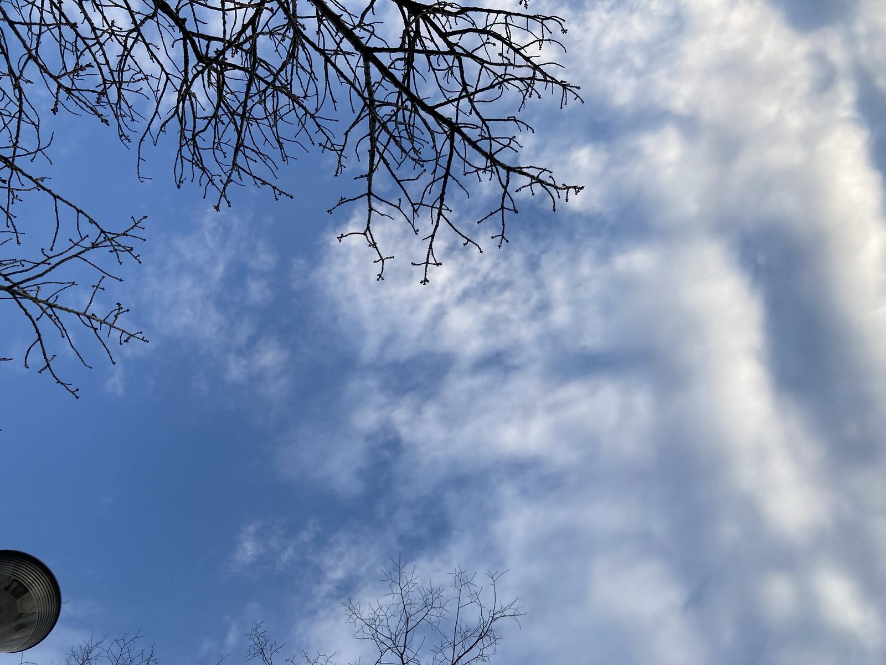

【双極性障害】早朝散歩を始めた話
生きるうつには朝日が良い、散歩が良いと言うが、そんなことができるならそれは「調子が良い」のだ。
うつ状態になると、体が重くなり、起き上がれやしない。ましてや外に行って歩くなんてつらすぎる。朝日さえもつらい。眩しい光は天敵だ。
そう思っていたし、実際そうだった。
じゃあどうやって朝散歩を始めたのか。
夫に連れ出されたのである。
「着の身着のままで良いよ」
寝起きそうそう「散歩に行こう」と誘われ、寝癖でボサボサ、顔も洗わず、部屋着のまま、コートを羽織りマフラーを巻いてマスクをして、連れ出された。
歩くのはしんどかった。
家の周りをくるりと2〜3分。
それだけだった。
もう少し歩くのかと思った。
次の日も次の日も、寝起きの私に夫は「行こう」と声をかけ防寒して連れ出した。
昨日と逆回り。少し遠回り。
寝起きに希死念慮があった日は、散歩しながら嗚咽をあげて泣いた。泣きながら歩く。すれ違う車の前に踊り出たいと思いながら泣く。
散歩の効果かはわからないが、午後には気分がマシになる日が出てきた。頓服を飲んでるせいかもしれないし、散歩の効果かもしれない。
「今日は行きたくない」
「じゃあ俺1人で行くよ」
「行かないでそばにいて」
「じゃあ一緒に行こう」
そうしてまた連れ出される。
良かったのは、外に出るハードルが低かったことだと思う。
着替えて、メイクして、とかなら無理だった。
冬なのでコートが全てを隠してくれるので、良かった。着の身着のままで行こう。
寝癖がひどいなら帽子を被ろう。
最初は這っていくようだったけど、体が慣れたのか歩くのも楽になってきた。
自分じゃ始められなかったかもしれない。
個人差があるので無理に外に連れ出すのが良いという話ではない。無理やり連れ出されるのがうつを悪化させる場合もある。調子を見ながら見極める必要がある。ご注意を。